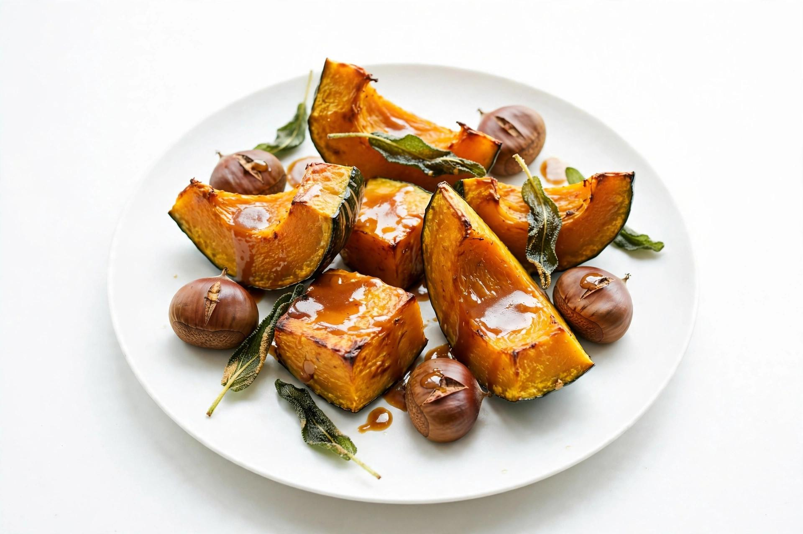
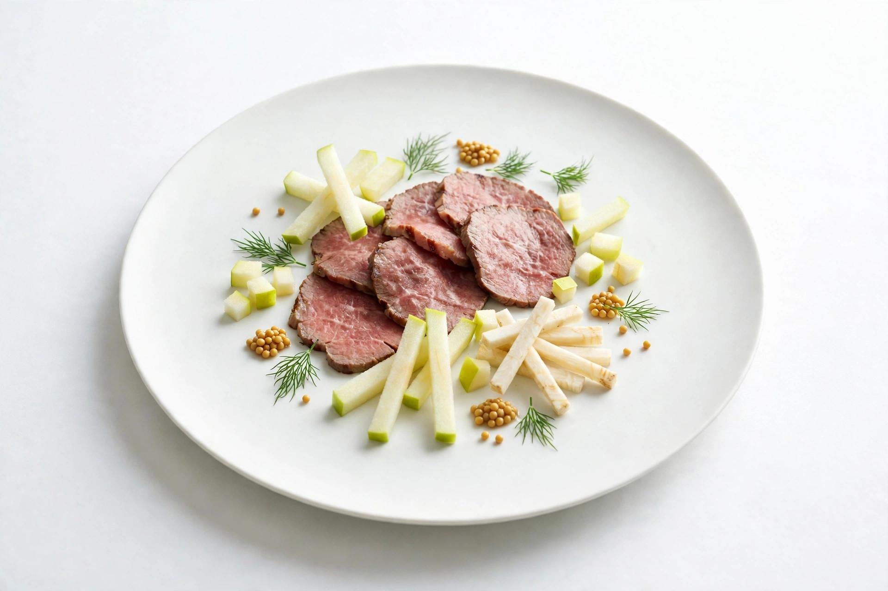
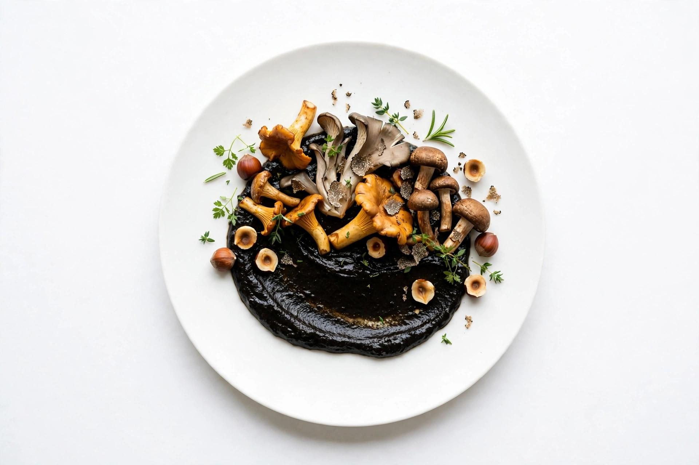

Kabocha in Environment
Roasted Kabocha · Chestnut · Miso Brown Butter · Crispy Sage
Roasted kabocha and chestnut unfold slowly into miso brown butter, with crisp sage adding a delicate contrast. Warm, earthy, and immersive, the dish introduces the idea of a world model — an intelligence that first builds an understanding of its environment before deciding how to move through it.

Venison Transduction
Seared Venison Carpaccio · Compressed Apple · Celeriac · Mustard Seed · Dill
Thinly sliced venison meets cold compressed apple, celeriac, mustard seed, and fresh dill. Richness, acidity, texture, and aroma arrive together, creating a single impression from many signals — the culinary expression of multimodal intelligence.

Mushroom Continuum
Wild Mushroom · Black Garlic · Hazelnut · Truffle · Forest Herbs
Wild mushroom and black garlic form a deep, earthy base, lifted by toasted hazelnut, forest herbs, and shaved truffle. Each layer lingers into the next, reflecting the logic of a state-space model, where information is carried forward rather than constantly rebuilt.